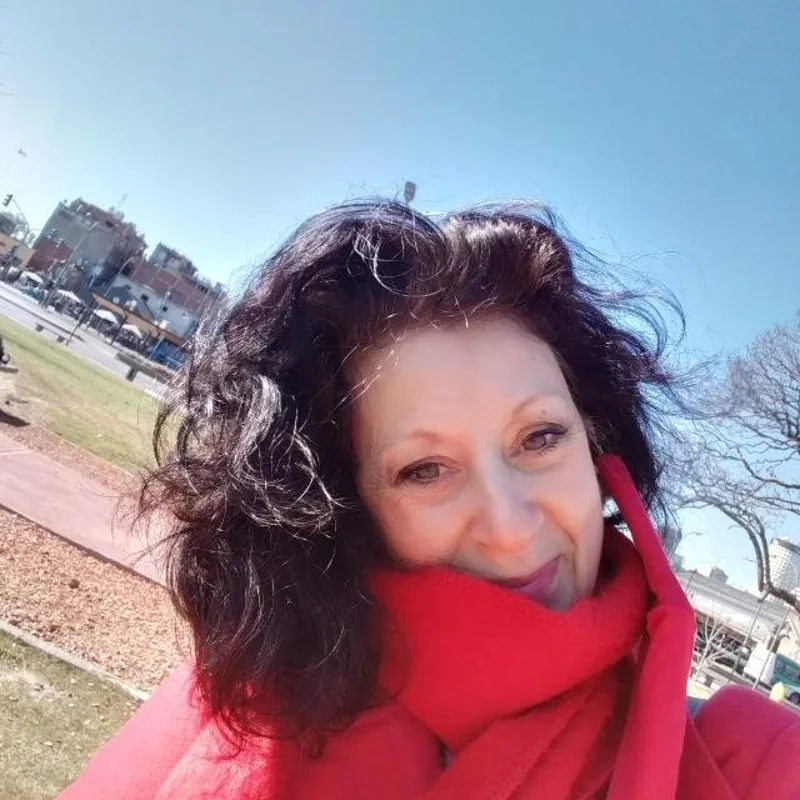

Ines Torrent
Pintora
Biografía y Trayectoria
Nació en la ciudad de Buenos Aires, Argentina en 1960.
Terminados los estudios secundarios, asistió al taller de Pintura del Prof. Ángel Marcos Bertolini en 1980 y comenzó exhibiendo sus primeros óleos en la muestra del cierre de actividades en el Pabellón II de la Cdad. Universitaria de Bs. As.

A partir de ahí, inclinó sus estudios hacia las Artes Visuales.
Comenzó su formación en la Escuela Nacional de Bellas Artes "Manuel Belgrano", egresando como Maestra Nacional de Dibujo en 1985. Completó la formación terciaria en la Esc. Nacional de Bellas Artes "Prilidiano Pueyrredón" (ENBAPP) en 1989, y obtuvo el título de Profesora Nacional de Pintura.
Paralelamente trabajó en diseño, ilustración de publicaciones antropológicas, diagramación de páginas de revistas de modas, etc. Con sus compañeros del Profesorado, expuso en las Galerías Pacífico (ex Centro Cult. Malvinas) y en el Club Sirio de Bs. As., en ambos casos en 1989.
Frecuentó los talleres de modelo vivo de la Asociación Estímulo de Bs. As. Alternó su vida entre Ciudad y zona Norte. En 1990 inició su labor de enseñanza en escuelas secundarias, que extendería en primarias e institutos terciarios.
Los primeros concursos en los que participó fueron organizados por la Casa de la Cult. de Vte. López, obteniendo menciones en el III y V concurso de croquis del año 1989 y el Primer Premio en el VI concurso de croquis de 1990 "Puerto de Olivos".
En 1992 integró una muestra colectiva en el Museo Histórico Munic. "Brig. Gral. J.M. de Pueyrredón", en San Isidro. Por algunos años residió en el barrio porteño de San Telmo, lo que la llevó a integrarse en otro entorno urbano. Nuevamente barcos; esta vez reapareció el paisaje portuario frecuentando el Barrio de La Boca, las orillas del Riachuelo, la Vuelta de Rocha y aledaños.
Su obra "¿Tomarías de esa sopa?" que resultó seleccionada en el "Salón Fernán Félix de Amador" en 2002, sería el claro inicio de una serie de pinturas referidas a temas sociopolíticos de la Argentina. Participó del I Salón Otoño de Pintura "Roberto Di Paolo" en 2004, de la Dir. de Cult. Munic. de San Isidro.
Cursó el Seminario de Equivalencias Universitarias en el I.U.N.A (hoy U.N.A: Universidad Nacional de Arte) y trabajó dos años como ayudante ad-honoren en el taller de Pintura OTAV I. Participó de la exposición: "ENTRE-TODOS 2006", para docentes del I.U.N.A. en el Centro Cult. Paseo Quinta Trabucco de Vte. López. Recibió una Mención especial del Jurado en el XXIV concurso de Croquis (Dir. de Cult., Municipalidad de Vte. López) en 2007.
Presentó la Tesis: "UN HILO INVISIBLE. El vínculo que construye el artista con el público", y como "trabajo de campo" investigó y entrevistó a grandes artistas de nuestro país. Se graduó de Licenciada en Artes Visuales I.U.N.A., Orientación: Pintura en 2008.
Inició su labor docente en la Esc. Sec. de Enseñanza Artística Nº 1 de San Isidro (Ex -Polivalente de Arte), actividad que continúa, y en 2012 expuso junto a docentes de la institución en el Colegio de Abogados del partido.
Concursó nuevamente en el X Salón Otoño de Pintura "Roberto di Paolo" año 2013, con la obra "Acrobacia en tela" que recibió una mención.
Expuso en una muestra colectiva en el 3er. Salón de Pequeño Formato del Museo Casa Carnacini (V. Ballester) en 2014 y en la Casa de la Cult. de Villa Adelina (San Isidro) en 2019.
Son de destacar sus exposiciones colectivas recientes en la Ciudad de Buenos Aires: La muestra Aniversario "Museos ATAMI de Japón en MOA", 2022 y el IV Salón 2022 de Pintura "María Elena Lopardo", Galería Ernesto De la Cárcova de la Asociación ESTÍMULO de Bellas Artes de la Cdad. de Bs. As.